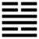

Lôi Hỏa Phong (豐 fēng)
Qui là về, là tới nơi, tới mục đích, đạt kết quả (qui kết), mà đạt được kết quả thì thịnh lớn, cho nên sau quẻ Qui (muội) tới quẻ Phong (thịnh lớn).
Thoán từ:
豐: 亨. 王假之, 勿憂, 宜日中．
Phong : hanh. Vương cách chi, vật ưu, nghi nhật trung.
Dịch: thịnh lớn thì hanh thông. Bậc vương giả tới được đừng lo, nên giữ đạo trung như mặt trời đứng giữa trời.
Giảng: Dưới là Ly (sáng suốt), trên là Chấn (động) sáng suốt mà hành động thì làm nên được sự nghiệp thịnh lớn. Chỉ bậc vương giả có quyền có vị mới làm tới nơi được. Khi đã thịnh lớn thì người sáng suốt biết rằng sẽ phải suy nên thường lo; nhưng đừng nên lo suông, cứ giữ được đạo trung như mặt trời (nội quái Ly có nghĩa là mặt trời) đứng ở giữa trời thì sẽ tốt.
Đại Tượng truyện áp dụng vào việc hình ngục, khuyên người trị dân nên sáng suốt mà soi xét tình dân mạnh mẽ xử đoán thì mau xong việc.
Ý nghĩa các hào :
1.
初九: 遇其配主, 雖旬, 无咎, 往有尚．
Sơ cửu: Ngộ kì phối chủ, tuy tuần, vô cữu, vãng hữu thượng.
Dịch: Hào 1, dương: Gặp được người chủ hợp với mình, tuy ngang nhau nhưng không có lỗi tiến đi thì có công nghiệp đáng khen.
Giảng: Hào này ở nội quái Ly, có đức sáng suốt, có tài (vì là dương), ở trên ứng với hào 4, thuộc ngoại quái Chấn, có đức hoạt động, mà cũng có tài (dương cương ) Bình thường thì ứng với nhau, phải một âm một dương mới tốt, ở hào này thì khác, cùng là dương cả mà cũng tốt, vì 1 sáng suốt, 4 hoạt động, hai hào dương thành, chứ không tương phản, giúp nhau làm nên sự nghiệp lớn được. Hai hào ngang nhau, biết châm chước ý kiến nhau là điều tốt cho sự hợp tác; nếu một bên cầu thắng, một bên chỉ nhường, thì không còn là hợp tác nữa, khó mà thành công lớn được.
2.
六二: 豐其蔀, 日中見斗．往, 得疑疾, 有孚發若, 吉．
Lục nhị: phong kì bộ, nhật trung kiến đẩu;
Vãng, đắc nghi tật, hữu phu phát nhược, cát.
Dịch: Hào 2, âm: Bị màn che lớn, dày quá, như ban ngày (mặt trờ bị che lấp) mà thấy sao Bắc đẩu; tiến đi thì bị ngờ và ghét, cứ lấy lòng chí thành mà cảm hoá được người trên thì tốt.
Giảng: Hào âm này ở giữa quẻ Ly, đắc trung đắc chính; nhưng kẻ ứng với nó là hào âm, âm nhu bất chính, không giúp được nó, không tin nó; nó như một hiền thần gặp một ám chúa, nên ví với mặt trời (quẻ Ly) bị mây mù che dày. Có muốn theo 5 thì bị 5 nghi kỵ và ghét; chỉ có cách giữ vững đức trung trinh, lấy lòng chí thành mà đối xử với 5, rồi sau 5 sẽ tỉnh ngộ. Chữ 若 nhược ở đây trỏ hào 5.
3.
九三: 豐其沛, 日中見沬．折其右肱, 无咎．
Cửu tam: Phong kỳ bái, nhật trung kiến muội.
Chiết kì hữu quăng, vô cữu.
Dịch: Hào 3 dương: bị màn che kín mít, ban ngày mà thấy sao nhỏ (muội) gẩy cánh tay phải, không có lỗi.
Giảng: Hào này dương cương, ở trên cùng quẻ Ly là người sáng suốt, có tài; nhưng hào trên cùng ứng với nó lại bất tài (âm nhu), không giúp gì được nó; đã vậy nó còn bị hào 4 che ám, hoàn cảnh còn tệ hơn hào 2 nữa, cho nên bảo là bị tấm màn che kín mít, ban ngày mà tối như đêm, thấy được cả những vì sao nhỏ. Như vậy hào 3 như người bị gẩy cánh tay phải (trỏ hào 5 không giúp gì được nó), nó không có lỗi vì hoàn cảnh khiến vậy.
4.
九四: 豐其蔀, 日中見斗, 遇其夷主, 吉．
Cửu tứ: Phong ki bộ, nhật trung kiến đẩu, ngộ kì di chủ, cát.
Dịch: Hào 4, dương: Bị màn che lớn dày quá, như ban ngày mà thấy sao Bắc Ðẩu gặp được bạn bằng vai vế, tốt.
Giảng: Hào này dương cương, ở địa vị cao, có thể lập được sự nghiệp, nhưng bất trung, bất chính lại bị hào 5 âm nhu, hôn ám che lấp hoàn cảnh cũng như hào 2, cũng ban ngày mà thấy sao Bắc đẩu, nhưng nay được hào 1 ở dưới đồng đức (cũng dương cương ) bằng vai vế ứng với nó, cũng coi là tốt được.
5.
六五: 來章, 有慶, 譽, 吉．
Lục ngũ: Lai chương, hữu khánh, dự, cát.
Dịch: Hào 5, âm: Mời những nhân tài giúp mình thì được phúc, có tiếng khen, tốt.
Giảng: Hào này ở địa vị chí tôn, âm nhu, không có tài tạo được sự nghiệp thịnh lớn, nhưng khá là có đức trung (ở giữa ngoại quái), và có hào 3, 4 dương cương, hiền tài ở dưới mình, nếu biết mời họ giúp mình thì có phúc và được tiếng khen, tốt.
6.
上六: 豐其屋, 蔀其家, 闚其戶．闃其无人,三歲不覿, 凶．
Thượng lục: Phong kì ốc, bộ kì gia, khuy kì hộ,
Huých kì vô nhân, tam tuế bất địch, hung.
Dịch: Hào trên cùng, âm: Cất nóc nhà rất cao lớn mà phòng mình ở lại nhỏ hẹp, bị bưng bít (tự mình không muốn ai lui tới với mình), cho nên nhìn vào cửa, lặng tanh không thấy bóng người, ba năm không thấy ai (hoặc không giác ngộ) xấu.
Giảng: Hào này khó hiểu, mỗi sách giảng một khác, chúng tôi theo cách hiểu của Phan Bội Châu vì hợp với Tiểu Tượng truyện hơn cả.
Hào này âm nhu, như người hôn ám, mà ở trên cùng, có địa vị rất cao, y như người cất nhà, nóc rất cao (địa vị cao), mà buồng mình ở lại thấp hẹp (bản tính âm nhu), thế là tự mình che lấp mình, nên không ai lui tới với mình, do đó mà đứng ở cửa nhìn vào, không thấy bóng người, ba năm không thấy ai (hoặc ba năm vẫn không giác ngộ: địch là thấy rõ). Không gì xấu hơn.
*
Tên quẻ là thịnh lớn, rất tốt mà không có hào nào thật tốt, hào nào cũng có lời răn đe. Cổ nhân muốn cảnh cáo chúng ta ở thời thịnh lớn, có phúc thì cũng có sẵn mầm hoạ, phải cẩn thận lắm mới được.
Các quẻ khác, thường hào dương ứng với âm, âm ứng với dương mới tốt; quẻ này trái lại, dương ứng với dương (như 1 và 4) mới tốt. Đó cũng là một lời khuyên nữa: ở thời thịnh, người ta thường vì quyền lợi chia rẽ nhau mà hoá suy, phải biết đồng đức, đồng tâm với nhau, thì mới tránh được hoạ.